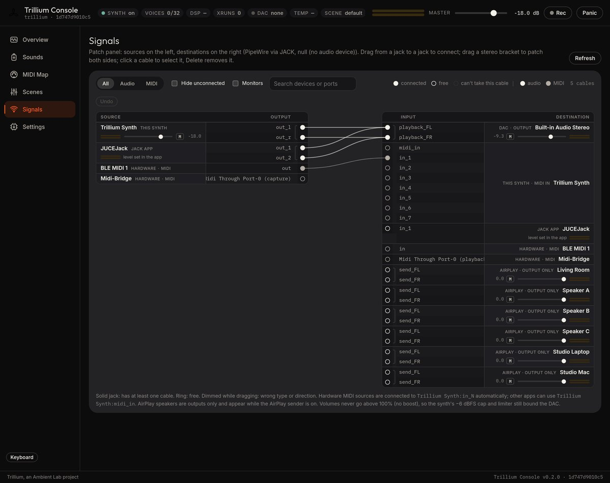

- Hardware
- Raspberry Pi 5 Model B with a 32 GB microSD card.
- Audio
- Allo Katana DAC HAT (ES9038Q2M, up to 32-bit), run at 48 kHz with a 64-frame PipeWire quantum (1.33 ms).
- OS
- Raspberry Pi OS Lite (Debian 13 Trixie) with the PREEMPT_RT 6.18 kernel. One CPU core is reserved for audio.
- Connections
- USB and BLE MIDI input, Ethernet, and DNS-SD discovery.
- Software
- Trillium Console, a web patch panel with levels, meters, instruments, scenes and service switches. Trillium Synth, a 32-voice wavetable and sample-playback instrument with an output limiter.
- Status
- Experimental prototype.
- Open
- Source in the repository, licensed GPL-3.0-or-later OR commercial. Open hardware is planned.
- Marks
- Trillium and the Trillium names and marks are trademarks of M-of-N and are not covered by these licences.